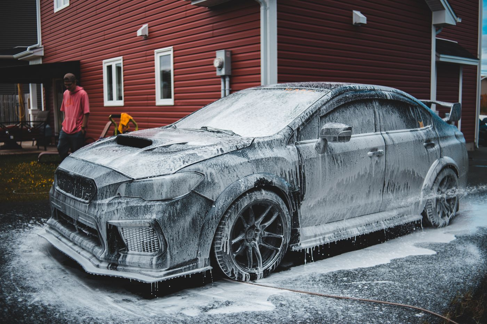
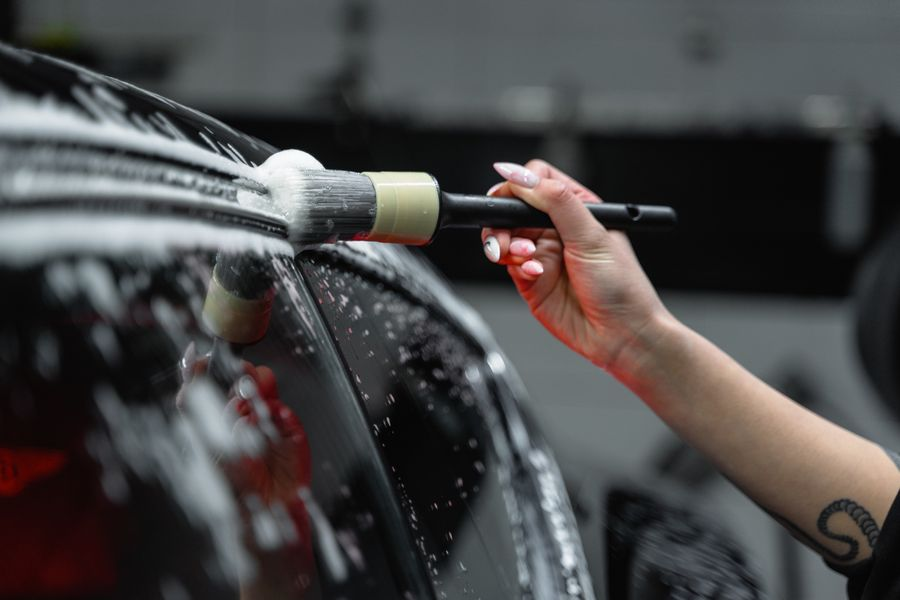
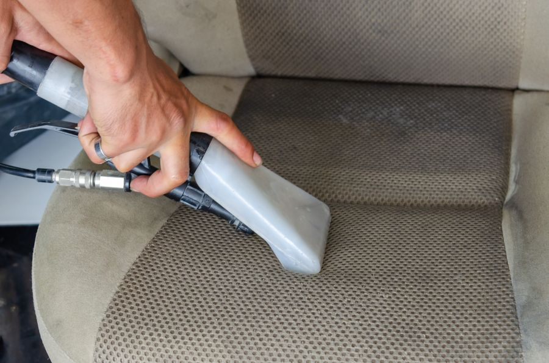
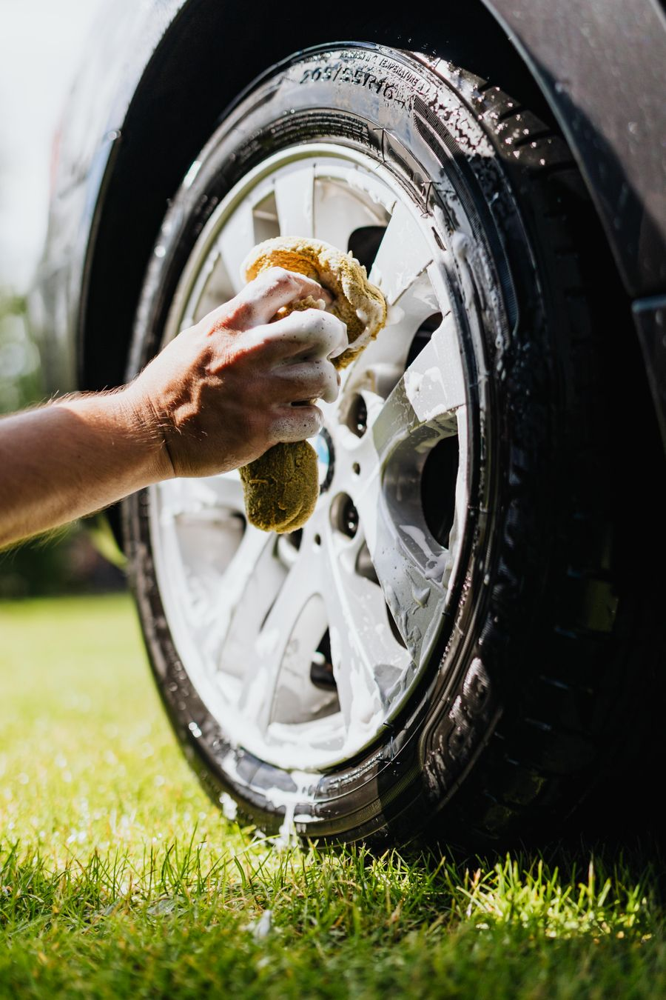

Lavado con espuma
Cañón de espuma para aflojar la suciedad sin frotar en seco, y secado completo y detallado.
Lavado con espuma, interior a fondo y encerado, donde tengas el carro. Vamos hasta ti y protegemos plásticos, tablero y pintura de los rayos UV.

Esto es lo que incluyen nuestros paquetes. En cada servicio ves en qué paquete viene.



Cañón de espuma para aflojar la suciedad sin frotar en seco, y secado completo y detallado.
Aspirado completo, vidrios por dentro y por fuera, alfombras plásticas lavadas y abrillantadas, dash y puertas con protección UV.
En el Intermedio, limpieza de asientos para quitar manchas y suciedad. En el VIP, tapicería completa: asientos, alfombra, cinturones y cielo raso.
Encerado completo de la carrocería con protección UV y repelencia al agua, y plásticos negros externos abrillantados.
Medellín, Área Metropolitana y Oriente antioqueño. Básico: 1 h a 1 h 30 min. Intermedio: 3 a 4 h. VIP: 5 a 6 h.
Limpieza y detallado del motor, y abrillantado de llantas y guardabarros. El Básico incluye el abrillantado de llantas.
Este es el orden del paquete VIP. El Básico y el Intermedio siguen los mismos pasos con lo que incluye cada uno.
Cañón de espuma y secado completo y detallado.
Aspirado completo y limpieza de tapicería.
Dash y puertas con protección UV, vidrios por dentro y por fuera.
Limpieza y detallado del motor.
Encerado con protección UV, plásticos externos, llantas y guardabarros.
Tu carro listo para que lo revises con nosotros.
Elige tu vehículo y el servicio. Te mostramos un estimado y el mensaje listo para enviar por WhatsApp.
El Básico es para mantener el carro limpio por dentro y por fuera. El Intermedio suma limpieza de asientos, encerado, motor y aroma. El VIP es el más completo: suma tapicería completa de asientos, alfombra, cinturones y cielo raso.
Un carro más grande tiene más superficie y más interior que limpiar. Por eso manejamos tres precios: sedán, SUV de 5 pasajeros, y SUV de 7 pasajeros, 4x4 o pick-up.
Sí, todos los paquetes son a domicilio. Cubrimos Medellín, el Área Metropolitana y todo el Oriente antioqueño.
Solo un punto de luz (una toma eléctrica cerca del carro). Nosotros llevamos el agua, los productos y el equipo.
El Básico tarda de 1 h a 1 h 30 min, el Intermedio de 3 a 4 horas y el VIP de 5 a 6 horas.
Calcula tu precio en el cotizador y envíanos el mensaje por WhatsApp. Te respondemos con la disponibilidad.